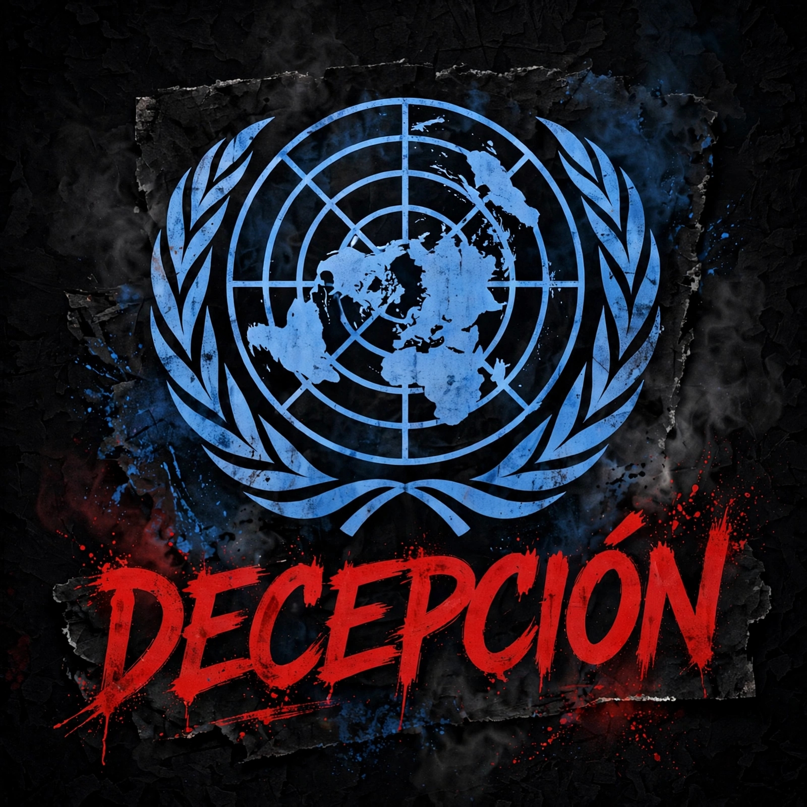

COMUNICADO FINAL
SITIO CERRADO
Este proyecto ha llegado a su fin.
Después de un periodo de trabajo y dedicación,
hemos decidido finalizar este proyecto web.
Esta página ya no recibirá nuevas actualizaciones
y permanecerá como recuerdo de una etapa que
hoy llega a su conclusión.
Gracias a todas las personas que visitaron
el sitio y formaron parte de este proyecto.
Nos despedimos con gratitud.
● PROYECTO FINALIZADO